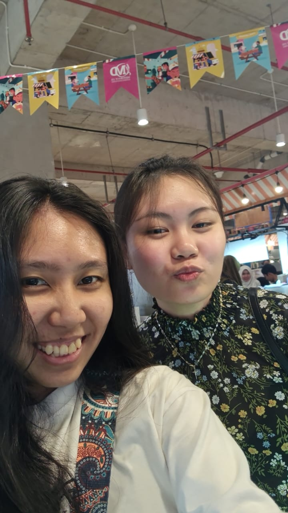
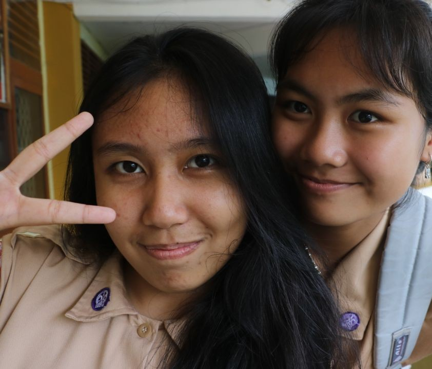
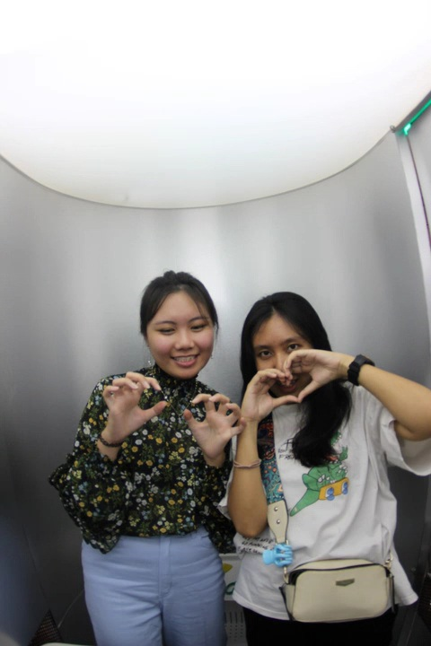
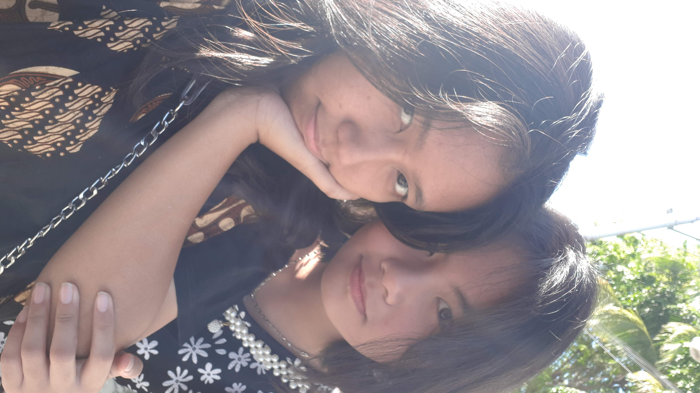
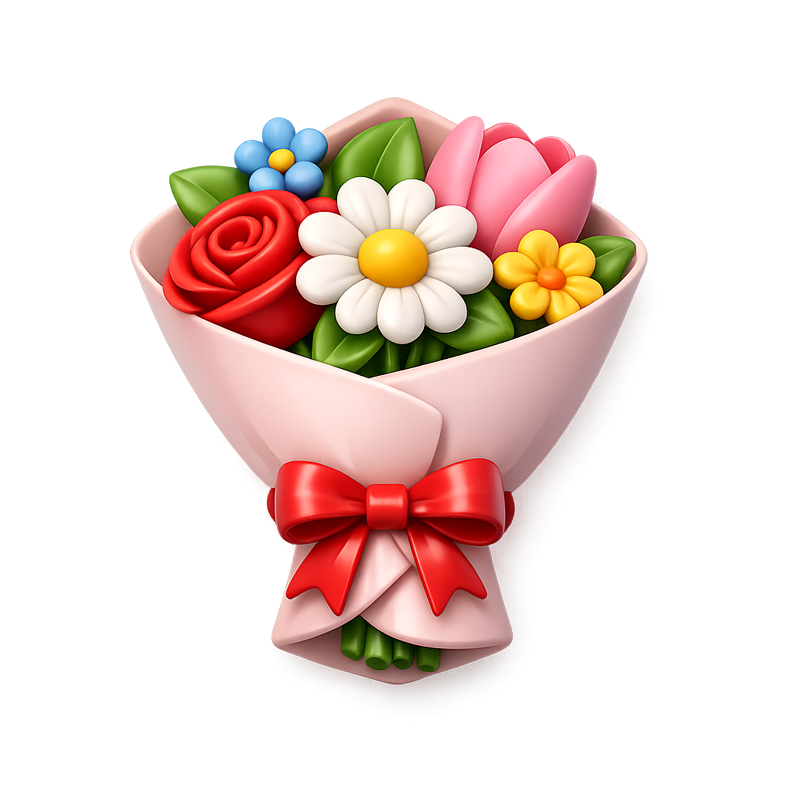
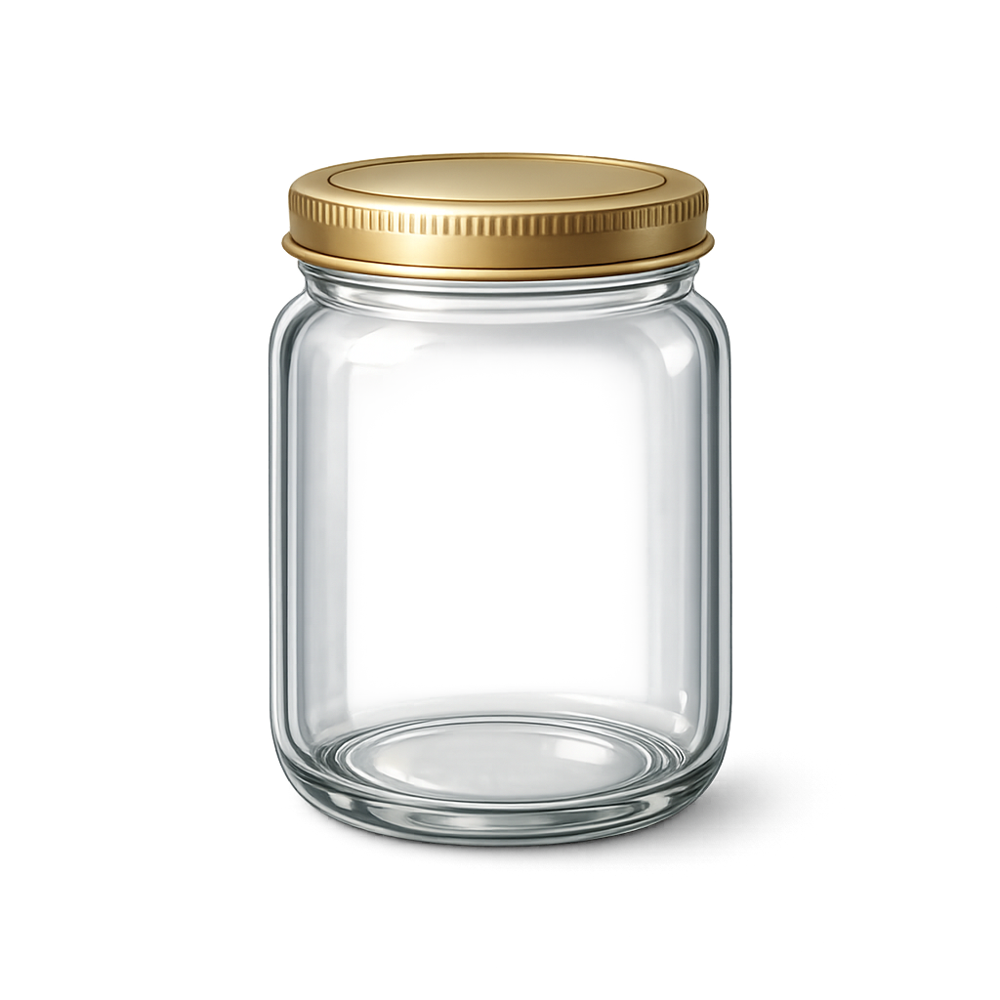

A little scrapbook for
Open when you're ready.
HAPPY BIRTHDAY
This is not just a website. It's a collection of memories, appreciation, and little surprises.
Before we continue, I want to tell you something.
You might hear a song playing in the background right now.
I chose this song because it reminds me of the feeling of our friendship.
Ada bagian yang berbunyi
"Yang telah hancur pelan-pelan kau kembalikan padaku."
Bagi sa, itu menggambarkan bagaimana nga sering membuat sa pe hari-hari itu jadi lebih ringan,
nga mungkin te sadar, tapi nga bisa bikin sa senang cuma karna ng pe chat.
Dan bagian "Yang memeluk raga kecilku, yang menyayangi kecilku, yang memeluk jiwa kecilku, dan semua-semua aku"
ini bikin sa ingat sama torang pe persahabatan.
nga kenal semua versi dari sa. yang bahagia, yang hancur, yang sedang berjuang,
dan nga tetap memilih untuk menjadi sa pe teman.
So while you explore this little scrapbook, let this song be part of the journey too.
And most importantly,
thank you for being you. 💜
Click each memory.

Memory 01
Memory 02
Memory 03
Memory 04Ketemu pertama kali di TK katolik sekitar 2006 - 2007
Torang mulai dekat pas SD - SMP
Semua hal yang dilakukan sama nga itu jadi sa pe favorit
Tapi kalau mau pilih mungkin pas sa akhirnya ketemu lagi sama nga di Makassar
Still grateful to know you.
Find all 5 hidden flowers.

Some flowers bloom in gardens. Some bloom in people's lives. Thank you for being one of them. 💜
Water the flower until it blooms.
Catch 10 falling stars.

Click the envelope.
Complete all missions first.
Thank you for every memory, every laugh, every conversation, and every moment.
I hope this year is filled with happiness, peace, and beautiful surprises.